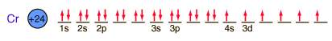

Chromium
Chromium is a silvery white metal with a bluish tinge. Its strength, corrosion resistance, and high melting point (1830°C) have led to applications in coating other metallic objects.
It has been used to coat the inside of barrels of large artillery pieces because it is able to withstand the hot powder gases. It becomes coated with a thin oxide layer which helps with corrosion protection.
Chromium is commonly used to plate brass and steel objects, such as plumbing fixtures.
Chromium is used in the production of steel alloys. Stainless steel contains 12-18% chromium and usually about 8% nickel.
Potassium dichromate is used widely as a bleach for photographic development.
Chromium and iron together form the oxide chromite, FeCr2O4. Chromium and lead are found in the mineral crocoite, PbCrO4.
Chromium is the first element to form an exception to the general order of filling of electron orbitals, filling five 3d states before it fills the second 4s state.

|